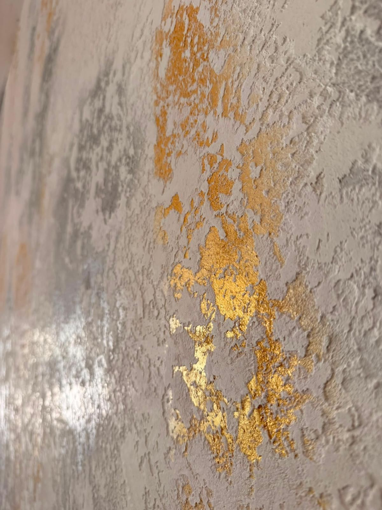
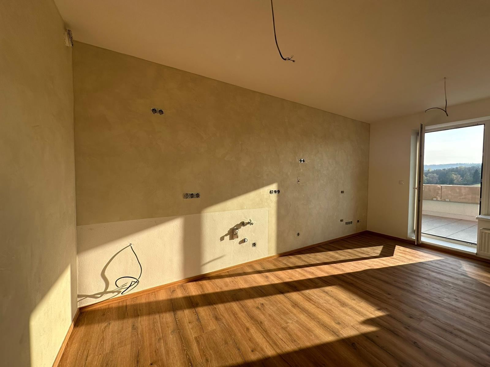
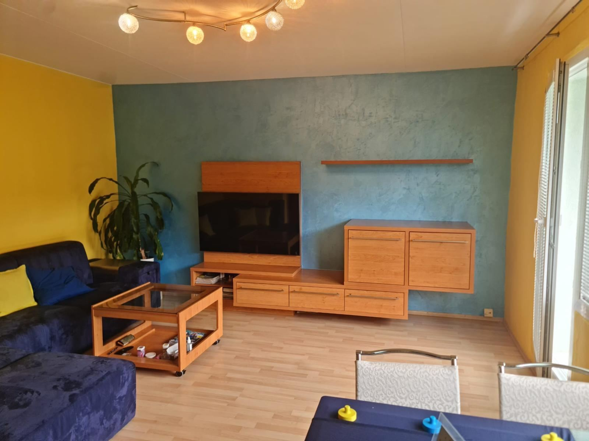
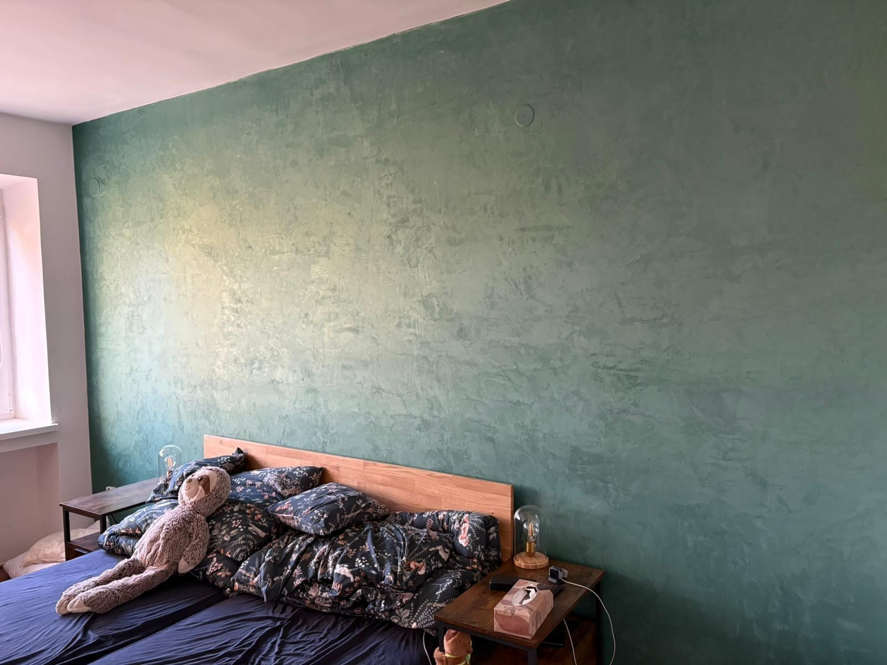
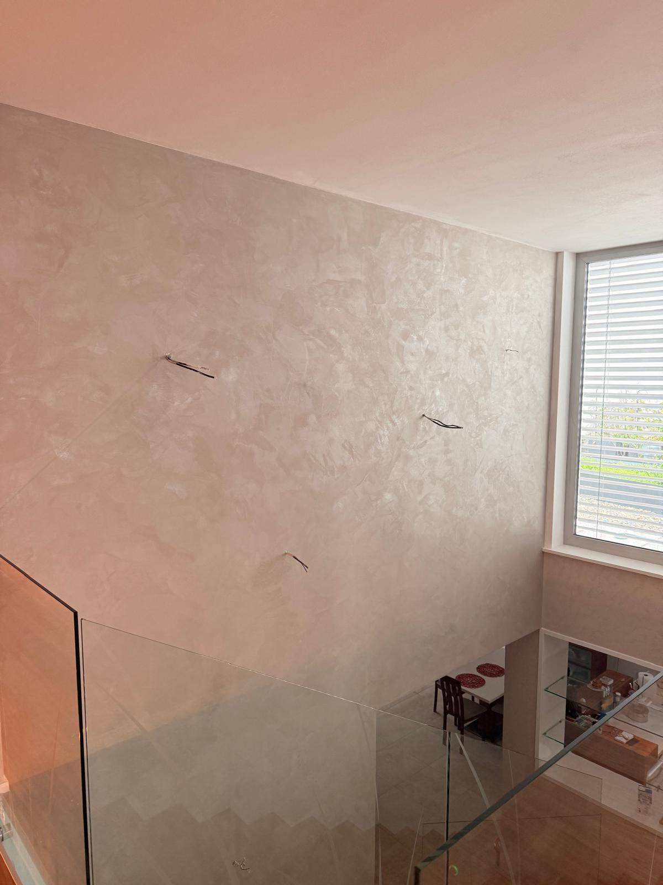

Návrh A — přepínač (taby) + fotka + CTA u každé techniky
Materiály a techniky
Pět povrchů, jeden váš
Každá technika mění, jak prostor působí a jak dlouho vydrží. Vyberte si podle toho, co chcete, aby stěna dělala – a proberte to s námi zdarma na místě.
Nejluxusnější volba
Marmorino
Benátská vápenná stěrka s příměsí mramorové moučky. Po vyleštění získává hloubku a jemný lesk připomínající skutečný mramor – hodí se, kde má povrch vypadat draze bez obkladu.
Poptat MarmorinoPro osobitý charakter
Patinování
Tónování do hloubky a kontrastů vytváří jemně nepravidelný, starobylý vzhled povrchu s vlastní kresbou – žádné dvě stěny nevyjdou úplně stejně.
Poptat patinováníPro moderní a industriální prostory
Pohledový beton
Syrově působící povrch imitující beton bez nutnosti bourání zdi. Oblíbená volba do minimalistických interiérů, kanceláří i showroomů.
Poptat pohledový betonPro přírodní, zemitý vzhled
Travertino Romano
Struktura přírodního travertinu s charakteristickými póry a nepravidelnou kresbou – přináší do prostoru charakter kamene bez jeho váhy a ceny.
Poptat Travertino RomanoPro jemný, elegantní dojem
Ottocento a Seta
Sametově jemné stěrky s hedvábným leskem, které vyniknou zejména při bočním osvětlení. Decentní pozadí pro ložnice, jídelny i reprezentativní prostory.
Poptat Ottocento a Seta
Realizace
Realizace
Realizace
Realizace
RealizacePozn.: fotky jsou obecné ukázky realizace z galerie, nejde o tvrzení, že fotka zobrazuje přesně danou techniku.
Návrh B — rozklikávací seznam (accordion), první položka zvýrazněná jako doporučená
Materiály a techniky
Pět technik. Jeden řemeslný standard.
Každá stěrka má vlastní charakter a vlastní důvod, proč si ji lidé vybírají. Rozklikněte techniku a zjistěte, co od ní čekat — my ji pak na vaší zdi odvedeme s tímtéž důrazem na detail u všech pěti.
01 Marmorino Mramor, aniž byste platili cenu mramoru.
Benátská vápenná stěrka s příměsí mramorové moučky. Po vyleštění získává hloubku a jemný lesk připomínající skutečný mramor.
Poptat Marmorino02 Patinování Stěna, která vypadá, jako by měla vlastní historii.
Tónování do hloubky a kontrastů vytváří jemně nepravidelný, starobylý vzhled povrchu s vlastní kresbou.
Poptat patinování03 Pohledový beton Beton bez bourání. Beton bez kompromisů.
Syrově působící povrch imitující beton bez nutnosti bourání zdi. Oblíbená volba do minimalistických interiérů.
Poptat pohledový beton04 Travertino Romano Charakter kamene. Váha peří.
Struktura přírodního travertinu s charakteristickými póry a nepravidelnou kresbou — charakter kamene bez jeho váhy a ceny.
Poptat Travertino Romano05 Ottocento a Seta Hedvábný lesk, který ožije s bočním světlem.
Sametově jemné stěrky s hedvábným leskem, které vyniknou zejména při bočním osvětlení.
Poptat Ottocento a SetaNevíte, která technika sedne vašemu interiéru? Poradíme přímo na místě, zdarma a bez závazků.
Nezávazná poptávka stěrekNávrh C — srovnávací seznam (povrch / charakter vedle sebe) + tmavý CTA blok
Materiály a techniky
Pět charakterů povrchu. Jeden, který je váš.
Každá technika dává stěně jiný výraz — od leštěného mramoru po syrový beton. Porovnejte je a vyberte tu, která sedí k vašemu prostoru.
Marmorino
Benátská vápenná stěrka s příměsí mramorové moučky. Po vyleštění získává hloubku a jemný lesk připomínající skutečný mramor.
Patinování
Tónování do hloubky a kontrastů vytváří jemně nepravidelný, starobylý vzhled povrchu s vlastní kresbou.
Pohledový beton
Syrově působící povrch imitující beton bez nutnosti bourání zdi. Oblíbená volba do minimalistických interiérů.
Travertino Romano
Struktura přírodního travertinu s charakteristickými póry a nepravidelnou kresbou — charakter kamene bez jeho váhy a ceny.
Ottocento a Seta
Sametově jemné stěrky s hedvábným leskem, které vyniknou zejména při bočním osvětlení.
Nevíte, která technika je ta pravá?
Pošlete nám pár fotek prostoru — doporučíme techniku, která bude sedět k dispozici i účelu místnosti.
Návrh D — velká fotka + krátký claim, techniky jako štítky (emoční/aspirační)
Materiály a techniky
Stěny, které vypadají jinak než všechny ostatní.
Hloubka, lesk nebo syrová textura místo ploché barvy. Dekorativní stěrka promění místnost v prostor, který si lidé zapamatují – a vy si ho budete užívat každý den.
Nezávazně do 24 hodin odpovíme s návrhem řešení.
Techniky, ze kterých vybíráme
- Marmorino
- Patinování
- Pohledový beton
- Travertino Romano
- Ottocento a Seta